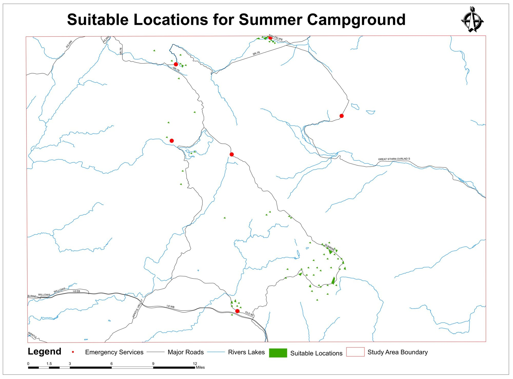

Urban GIS & Site SuitabilityFig. 1 Suitable locations for a summer campground
Suitable Locations for a Summer Campground
Raster suitability model combining relief and other criteria to find suitable campground sites.
- Location
- Eastern San Diego County, California, USA
- Year
- 2024
- Client
- Practice study
- Tools
- ArcGIS Pro, DEM, Weighted overlay


Challenge
Find suitable sites for a summer campground that are close to water and roads but not too far from emergency services.
Approach
- Derived slope and relief
- Reclassified each criterion
- Weighted overlay to find suitable cells
- Mapped the suitable locations
Results
- The largest group of suitable sites lies in the south-east of the study area, along Sunrise Highway
- Smaller groups sit near SR-79 in the north, at San Felipe, and next to I-8 and Old Highway 80 in the south
- Most suitable sites lie close to a road and within a few miles of one of the six emergency-service points
Practice study: course and client details omitted.